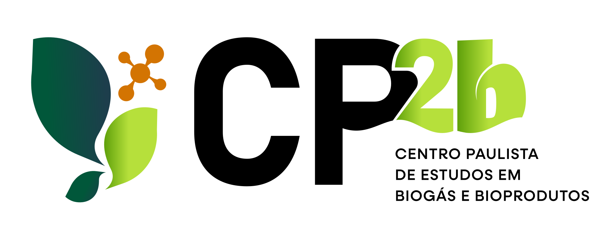

Montando o ecossistema…
☀10:00junhosafra
Desde que você abriu esta página
0m³ de metano que os resíduos de SP poderiam gerar
0m³ cabem na capacidade de biometano instalada hoje

Do resíduo à energia, aos coprodutos e ao valor ambiental